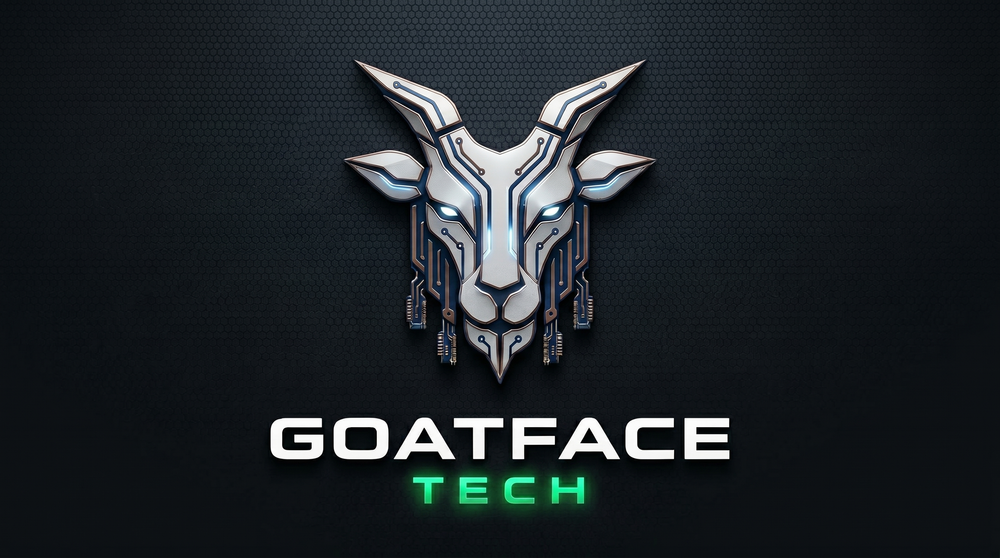

Independent AI Research · Sundre, Alberta
Not fine-tuning someone else's model.
Not wrapping an API.
Original architecture. Original ideas.
Built from the ground up, on modest hardware,
in a small town in Alberta.
Active Projects
Language
Terse
A programming language designed for AI systems from day one. Reads like English. Compiles to native machine code via LLVM. Knowledge graphs, inference, tensors, and ethics are core grammar — not libraries.
In DevelopmentAI Architecture
NCI
Native Compression Intelligence. An original AI architecture built around knowledge graphs and semantic compression. Running on custom hardware in Sundre, Alberta.
Live · Session 30+Silicon · Future
NCI Ethics Core
A dedicated hardware chip that executes Terse ethics rules in silicon. Ethics rules written in Terse, compiled to hardware. You can't jailbreak silicon. A hardware ethics engine is not a filter — it is a physical constraint upstream of all software.
Planned · Phase 6The Three Laws of Terse
"Knowledge is not stored, it is organized. Retrieval is not lookup, it is reconstruction."
"Capability is not authorization."
"The compiler works harder so you don't have to."
48.1999° N, 114.6407° W · Sundre, Alberta · 2026